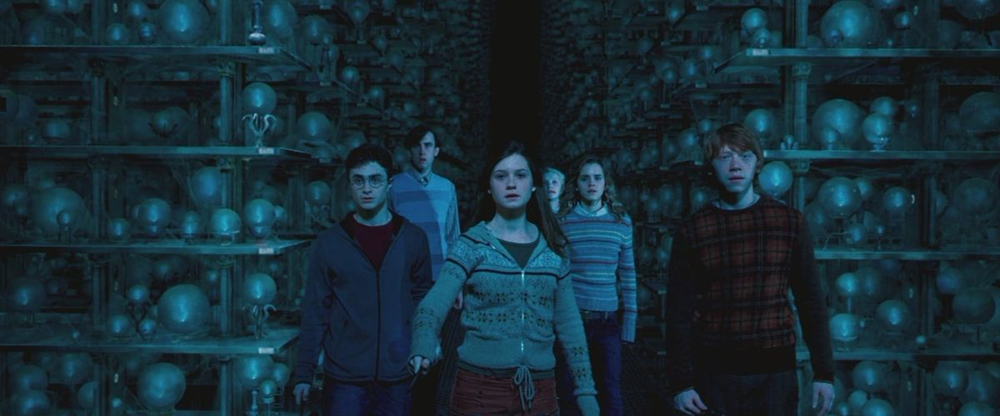

| Data De Lançamento | Diretor | Duração |
|---|---|---|
| 11 de julho de 2007 (Brasil) | David Yates | 2h 18m |
A história acompanha Harry Potter em seu quinto ano na Escola de Magia e Bruxaria de Hogwarts. Após o retorno de Lord Voldemort, o Ministério da Magia se recusa a acreditar que o bruxo das trevas voltou e tenta controlar o que acontece dentro da escola. Para isso, Dolores Umbridge é nomeada professora de Defesa Contra as Artes das Trevas e passa a impor regras cada vez mais rígidas aos alunos. O filme mistura fantasia, aventura e suspense, mostrando Harry enfrentando a descrença do mundo bruxo, amadurecendo e se preparando para a guerra que se aproxima.
| Personagem | Ator/Atriz | Idade Atual |
|---|---|---|
| Harry Potter | Daniel Radicliffe | 37 anos |
| Rony Weasley | Rupert Grint | 38 anos |
| Hermione Granger | Emma Watson | 36 anos |
| Dolores Umbridge | Imelda Staunton | 70 anos |
| Sirius Black | Gary Oldman | 68 anos |
| Voldemort | Ralph Fiennes | 63 anos |
| Luna Lovegood | Evanna Lynch | 34 anos |
| Albus Dumbledore | Michael Gambon | *82 anos |
| Neville Longbottom | Matthew Lewis | 37 anos |
| Fread Weasley | James Phelps | 40 anos |
| George Weasley | Oliver Phelps | 40 anos |
| Bellatrix Lestrange | Helena Bonham Carter | 60 anos |
Esse filme é essencial para mostrar como a negação da verdade pode ser tão perigosa quanto o próprio vilão. O Ministério da Magia prefere desacreditar Harry a admitir que Voldemort voltou, e isso torna a história muito mais política e perturbadora.
Dolores Umbridge é uma das personagens mais detestáveis da saga justamente porque representa um tipo de maldade muito real: aquela que se esconde atrás de regras, discursos educados e uma falsa preocupação com a ordem. Imelda Staunton entrega uma atuação brilhante, e a personagem consegue despertar uma raiva genuína no público. A Armada de Dumbledore também é um dos pontos altos do filme. Ver Harry ensinando outros estudantes, assumindo responsabilidades e tentando prepará-los para um perigo que os adultos se recusam a reconhecer é muito importante para sua evolução. A batalha no Ministério e a morte de Sirius são momentos devastadores. Harry perde uma das poucas pessoas que poderiam representar uma família para ele, e a cena deixa evidente o preço emocional de enfrentar Voldemort. Mas esse filme sofre bastante quando comparado ao livro. O quinto livro é enorme e contém muitos detalhes sobre a política do Ministério, a Ordem da Fênix, os exames, o Quadribol e a deterioração emocional de Harry. A adaptação comprime tudo isso em pouco mais de duas horas. A história da Marieta Edgecombe e sua traição à Armada da Dumbledore é alterada, assim como o contexto de algumas punições de Umbridge. Também sinto falta da explosão de raiva de Harry no escritório de Dumbledore após a morte de Sirius, que é muito mais intensa no livro. E o desenvolvimento da relação entre Harry e seus amigos, bem como as explicações sobre a profecia, mereciam mais tempo. O filme mantém os principais acontecimentos, mas nem sempre permite que eles tenham o mesmo peso emocional da versão escrita.
Minha conclusão: um filme muito forte, com ótimas atuações e uma das vilãs mais memoráveis do cinema. A adaptação é apressada em alguns pontos, mas sua mensagem e seus momentos mais importantes continuam funcionando muito bem.